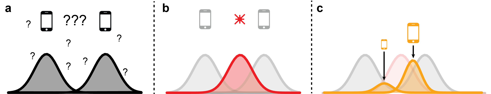

minimalpriora spinoff |
Updated | ||
|---|---|---|---|
| Author | Jan Kirchner | ||
Short summary : I apply the updating equation from Infra-Bayesianism to a concrete example of an Infradistribution and illustrate the process. When we “care” a lot for things that are unlikely given what we’ve observed before, we get updates that are extremely sensitive to outliers.
I’ve written previously on how to act when confronted with something smarter than yourself. When in such a precarious situation, it is difficult to trust “the other”; they might dispense their wisdom in a way that steers you to their benefit. In general, we’re screwed.
But there are ideas for a constrained set-up that forces “the other” to explain itself and point out potential flaws in its arguments. We might thus leverage “the other”’s ingenuity against itself by slowing down its reasoning to our pace. “The other” would no longer be an oracle with prophecies that might or might not kill us but instead a teacher who lets us see things we otherwise couldn’t.
While that idea is nice, there is a severe flaw at its core: obfuscation. By making the argument sufficiently long and complicated, “the other” can sneak a false conclusion past our defenses. Forcing “the other” to lay out its reasoning, thus, is not a foolproof solution. But (as some have argued), it’s unclear whether this will be a problem in practice.
Why am I bringing this up? No reason in particular.
Engaging with the work of Vanessa Kosoy is a rite of passage in the AI Safety space. Why is that?
The pessimist answer is that alignment is really, really difficult, and if you can’t understand complicated math, you can’t contribute.
The optimist take is that math is fun, and (a certain type of) person gets nerd sniped by this kind of thing.
The realist take naturally falls somewhere in between. Complicated math can be important and enjoyable. It’s okay to have fun with it.
But being complicated is (in itself) not a mark of quality. If you can’t explain it, you don’t understand it. So here goes my attempt at “Elementary Infrabayesianism”, where I motivate a portion of Infrabayesianism using pretty pictures and high school mathematic[1].
[1]
French high school, though, not American high school.
Imagine it’s late in the night, the lights are off, and you are trying to find your smartphone. You cannot turn on the lights, and you are having a bit of trouble seeing properly[2]. You have a vague sense about where your smartphone should be (your prior, panel a ). Then you see a red blinking light from your smartphone (sensory evidence, panel b ). Since your brain is really good at this type of thing, you integrate the sensory evidence with your prior optimally[3] to obtain an improved sense of where your smartphone might be (posterior, panel c ).
[3]
despite your alledged disinhibited state
[2]
If there’s been alcohol involved, I want to know nothing of it.
That’s boring old Bayes, nothing to see here; move along.
Now let’s say you are even more uncertain about where you put your smartphone.[4] It might be one end of the room or the other (bimodal prior, panel a ). You see a blinking light further to the right (sensory evidence, panel b ), so your overall belief shifts to the right (bimodal posterior, panel c ). Importantly, by conserving probability mass, your belief that the phone might be on the left end of the room is reduced. The absence of evidence is evidence of absence.
[4]
The idea that alcohol might have been involved in navigating you into this situation is harder to deny.
 This
is still only boring old Bayes. To go Infra, we have to go
weird.
This
is still only boring old Bayes. To go Infra, we have to go
weird.
Let’s say you are really, fundamentally unsure about
where you put your phone. If someone were to put a gun to your
head threaten to sign
you up for sweaters for kittens unless you give them your best
guess, you could not[5].
[5]
Is this ever a reasonable assumption? I don’t know. It seems to me you can always pick an uninformative prior. But perhaps the point is that sometimes you should acknowledge your cluelessness. Otherwise, you expose yourself to severe downside risks? But I’m not convinced.
This is the situation Vanessa Kosoy finds herself in[6][7]. With Infra-Bayesianism, she proposes a theoretical framework for thinking in situations where you can’t (or don’t want to) specify a prior over your hypotheses.
[7]
A proper infradistribution would have to be a convex set of distributions and upper complete and everything. Also, the support of the Gaussians would have to be compact. But for the example I’m constructing, this won’t become relevant. The edge points (the two Gaussians) of the convex set fully characterize how the entire convex set changes.
[6]
Not the coming home drunk situation, only the fundamental confusing part. Oh no, that came out wrong. What I mean is that she is trying to become less fundamentally confused. Urgh. I’ll stop digging now.
Because she is a mathematician, she is using the proper terminology while I’m using the handwavy language of Bayesian sensory integration:
a signed measure is a generalization of probability distributions,
an indicator function for a fuzzy set is a generalization of your observation/sensory evidence,
a continuous function g∈C(X,[0,1]) is… wait, what is g?
g tells you how much you care about stuff that happens in regions that become very unlikely/impossible given the sensory evidence you obtain. Why should you care about that, you ask? Great question; let’s not care about it for now. Let’s set it equal to zero, g=0.
When g=0, the updating equation for our two priors, P1 and P2, becomes very familiar indeed:
This is basically Bayes’ theorem applied to each prior separately. Still, the evidence term (the denominator) is computed in a wonky way[8], but this doesn’t make much difference since it’s a shared scaling factor. Consistently, things also look very normal when using this updating rule to integrate sensory information. We shift our two priors towards the evidence and scale them proportional to how unlikely they said the evidence is.
[8]
caption…
While this picture looks almost identical to the previous section, notice that the posterior is still split in two! Thus, we can still tell which one of our initial guesses turned out to be “more accurate”.
Alright, you know where this is going. We will have to start caring about things that become less likely after observing the evidence. Why we have to care is a bit hard to motivate; Vanessa Kossoy and Diffractor motivate in three parts where I don’t even get the first part[9][10].
[10]
A more “natural” way to motivate it might be to talk about possible worlds and updateless decision theory, but this is something that you apparently get out of Infrabayesianism, so we don’t want to use it to motivate it.
[9]
Despite having read it at least twice!
Instead, I will motivate why you might care about things that seem very unlikely given your evidence by revealing more information about the thought experiment:
It’s not so much that you can’t give your best guess estimate about where you put your smartphone. Rather, you dare not. Getting this wrong would be, like, really bad. You might be unsure whether it’s even your phone that’s blinking or if it’s the phone of the other person sleeping in the room[11]. Or perhaps the bright red light you see is the bulbous red nose of somebody else sleeping in the room. Getting the location of your smartphone wrong would be messy. Better not risk it. We’ll set g=1.
[11]
The story is coming together. This is why you can’t turn on the light, btw.
The update rule doesn’t change too much at first glance[12]:
[12]
Actually, in this particular example, it turns out that
Again, the denominator changes from one wonky thing (P+) to another (P−); but that still doesn’t matter since it’s the same for both equations.
But there is a ϰ that showed up out of nowhere! ϰ is a variable that tells us how good our distribution is at explaining things we did not get any evidence for[13]. Intuitively, you can tell that this will favor the prior distribution that was previously punished for not explaining the observation. And indeed, when we run the simulation:
[13]
You can’t find any ϰ in Vanessa Kosoy’s paper because she is thinking more generally about Banach spaces and a situation where there is no Radon-Nikodyn derivative. But if we have a density for our measures, we can write ϰ as
One of the two “distributions”[14] is taking off! Even though the corresponding prior was bad at explaining the observation, the updating still strongly increases the mass associated with that hypothesis.
[14]
I’m still calling them distributions, although we’ve left that territory already in the last section. More appropriate would be something like “density function of the signed measure” or “Radon-Nikodym derivative”.
Intuitively this translates into something like:
You are unsure about the location of your smartphone (and mortally afraid to get it wrong). You follow the red blinking light, but you never discard your alternative hypothesis that the smartphone might be at the other end of the room. At the slightest indication that something is off you’ll discard all the information you have collected and start the search from scratch.
This is a very cautious strategy, and it might be appropriate when you’re in dangerous domains with the potential for catastrophic outliers, basically what Nassim Taleb calls Black Swan events. I’m not sure how productive this strategy is, though; noise might dramatically mess up your updates at some point.
This concludes the introduction to Elementary Infrabayesianism. I realize that I have only scratched the surface of what’s in the sequence, and there is more coming out every other month, but letting yourself get nerd-sniped is just about as important as being able to stop working on something and publish. I hope what I wrote here is helpful to some, particularly in conjunction with the other explanations on the topic ([15](https://www.alignmentforum.org/posts/SzrmsbkqydpZyPuEh/my-take-on-vanessa-kosoy-s-take-on-agi-safety) [16](https://www.alignmentforum.org/posts/Zi7nmuSmBFbQWgFBa/infra-bayesianism-unwrapped) [17](https://www.alignmentforum.org/posts/beLgLr6edbZw4koh2/an-143-how-to-make-embedded-agents-that-reason)), which also go beyond the introduction.
[17]
despite your alledged disinhibited state
[16]
If there’s been alcohol involved, I want to know nothing of it.
[15]
French high school, though, not American high school.
I’m afraid at this point I’m obliged to add a hot take on what all of this means for AI Safety. I’m not sure. I can tell myself a story about how being very careful about how quickly you discard alternative hypotheses/narrow down the hypothesis space is important. I can also see the outline of how this framework ties in with fancy decision theory. But I still feel like I only scratched the surface of what’s there. I’d really like to get a better grasp of that Nirvana trick, but timelines are short and there is a lot out there to explore.
rather than
caption…
for an uninformative prior.
, since we’ve got two normalized probability distributions.
for an inframeasure (m,b).